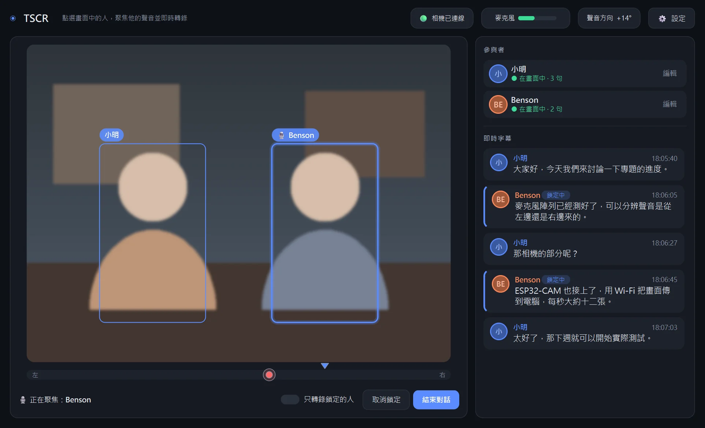

點一下，鎖定說話的人
在畫面中點選某個人，TSCR 會記住他、跟著他移動，並把收音方向對準他。
Windows 免費下載 · 所有資料都留在你的電腦
TSCR 結合相機、麥克風陣列與本機 AI，把多人對話即時變成標好說話人的字幕。點一下畫面中的人，就能聚焦他的聲音；對話結束後，自動整理成每個人的重點與待辦。

適合會議、課堂、訪談，也適合聽障朋友或在吵雜環境中想看清楚「誰說了什麼」。
在畫面中點選某個人，TSCR 會記住他、跟著他移動，並把收音方向對準他。
用筆電內建的麥克風陣列判斷聲音方向，加強鎖定對象的聲音、壓低其他方向的雜音。
邊說邊出字，自動轉成台灣繁體中文，國語、英語、粵語混著講也沒問題。
認得臉、也認得聲音。取一次名字，下次見面或一開口，字幕就會自動標上他的名字。
結束對話時選擇「產生筆記」，就會整理出每個人的重點、待辦事項與完整逐字稿。
語音辨識、人臉辨識和 AI 筆記都在本機運算，不需要帳號，聲音和影像不會上傳到任何地方。
第一次啟動會自動找出能判斷方向的麥克風。相機可以用 ESP32-CAM，也可以直接用筆電鏡頭。
畫面中的人會被框起來。點一下就鎖定他；第一次見到的人，輸入名字就會被記住。
右邊會出現誰說了什麼。打開「只轉錄鎖定的人」，就只顯示你在聽的那個人。
按「結束對話」，選擇要不要產生筆記，畫面會清空，馬上可以開始下一段對話。
TSCR-Setup.exe，雙擊開始安裝，不需要系統管理員權限。SHA-256：—
不用。打開右上角「設定」，把相機改成 0，就會使用筆電內建鏡頭。ESP32-CAM 的好處是可以放在桌子中間、用廣角鏡頭拍到所有人。
在「設定 → 分辨說話人」選「寬鬆」。也可以點那個多出來的人，輸入和原本一樣的名字，兩個就會合併，而且會記住這個人更多種聲音，之後越來越準。
到「設定」勾選「聲音方向左右相反」即可。換了不同的筆電或麥克風，可以按「重新偵測麥克風」。
筆記需要本機 AI（Ollama）。從開始功能表執行「TSCR → 安裝 AI 筆記功能」，或到 ollama.com 安裝。失敗時逐字稿一樣會保存，不會遺失。
不會上傳。記住的人、設定和每段對話的逐字稿都存在你電腦的 %LOCALAPPDATA%\TSCR 資料夾，刪除這個資料夾就會全部清除。
開始功能表 → TSCR →「解除安裝 TSCR」，或在 Windows「設定 → 應用程式」中移除。